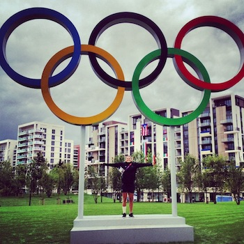

bizweekgraphics
bizweekgraphics
Filter projects:
lol
ha
woops
all

How to Debug a Jet
The Bitcoin Mining Game
A Long Wait on Death Row
Fighting 'Roe v. Wade'
The Drone War
California's Droughts
A Loaded Question
Jay-Z Is Right
Long-Term Joblessness
Where the Wealthiest Live
How to debug a jet
How to debug a jet
How to debug a jet
How to debug a jet
How to debug a jet
How to debug a jet
How to debug a jet
How to debug a jet
How to debug a jet